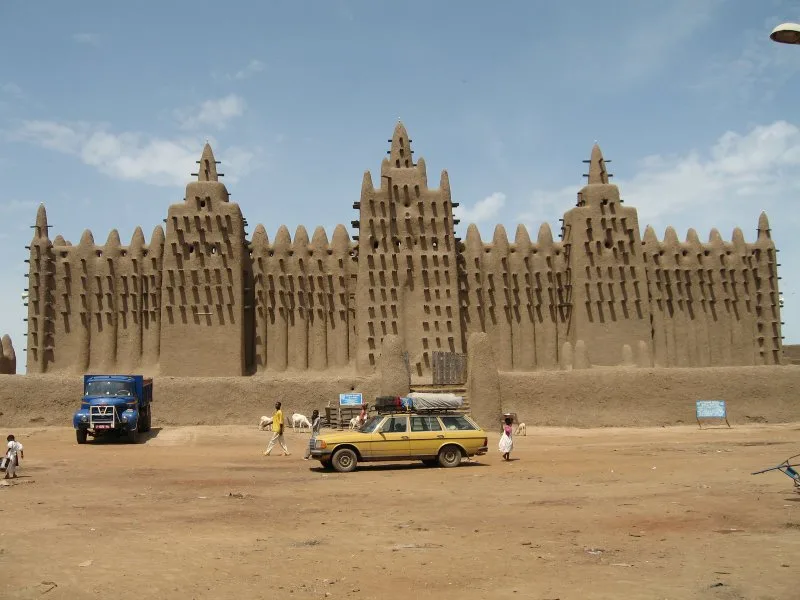

ÁFRICA OCIDENTAL · SÉC. XIII–XVI
Império do Mali
Rotas de ouro e sal conectavam cidades. Sob Mansa Musa, o império ganhou projeção; Timbuktu se destacou como centro de estudos.
COMÉRCIO & CONHECIMENTO